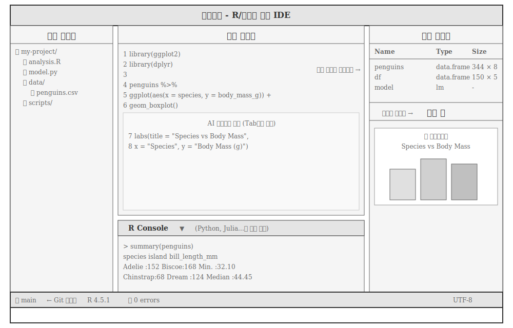
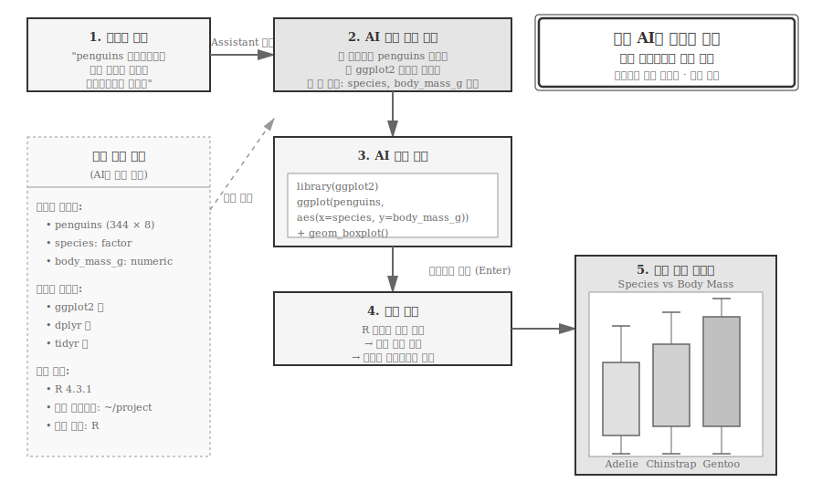
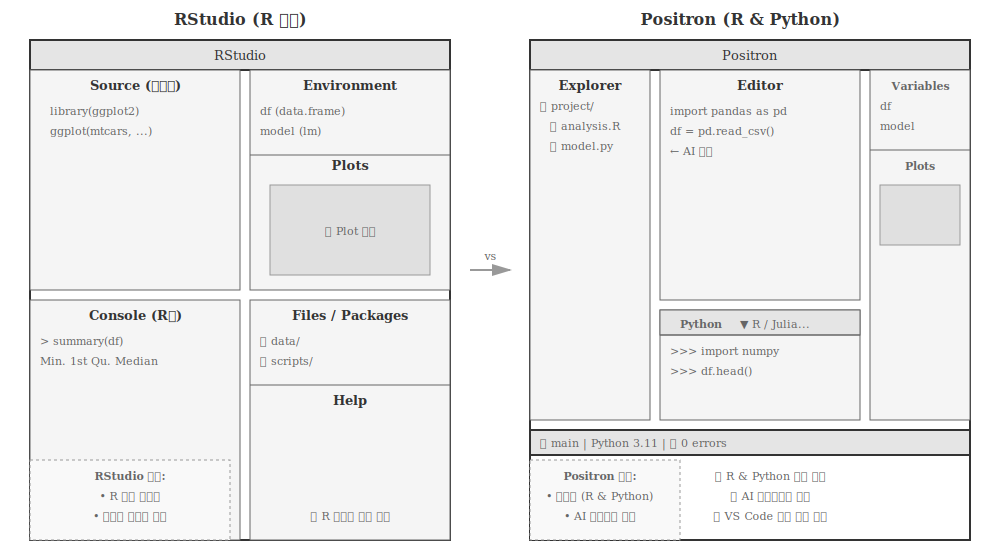

| 특성 | RStudio | VS Code | 포지트론 |
|---|---|---|---|
| 주력 언어 | R | 범용 (모든 언어) | R & Python |
| 주요 사용자 | R 데이터 분석가, 통계학자 | 모든 종류의 개발자 | 다언어 데이터 과학자 |
| 설정 | 거의 불필요 (R 최적화) | 높은 유연성 (직접 구성) | 낮은 설정 (R/Python 최적화) |
| 장점 | R 생태계 완벽 통합 | 최고의 유연성과 확장성 | R/Python 동시 작업 및 AI 통합 |
| 단점 | Python 지원 제한적 | 데이터 과학 초기 설정 복잡 | 일부 고급 기능 아직 개발 중 |
24 포지트론
데이터 과학 세계는 빠르게 변화하고 있으며, 이제 R과 파이썬(Python) 강력한 언어를 함께 사용하는 것이 표준이 되었다. R은 통계 분석과 시각화에 독보적 강점을 가지며, 파이썬은 머신러닝, 범용 프로그래밍, 시스템 통합에 널리 쓰인다. 하지만 오랫동안 데이터 과학자들은 두 언어를 동시에 편안하게 사용할 완벽한 통합 개발 환경(IDE)을 찾기 어려웠다. R 사용자에게는 RStudio가, 파이썬 사용자에게는 다양한 선택지가 있었지만, 두 세계를 자연스럽게 넘나들기에는 항상 아쉬움이 남았다.
이런 문제의식에서 출발한 것이 포짓(Posit, 과거 RStudio)사가 개발한 차세대 데이터 과학 IDE 포지트론(포지트론)이다. 포지트론은 “하나의 팀, 두 개의 언어” 현실을 받아들이고, R과 파이썬을 모두 일급 시민1으로 대우하는 현대 ‘다언어(polyglot)’ 개발 환경을 지향한다.
24.1 포지트론 철학
포지트론 핵심 철학은 RStudio 데이터 과학 전문성과 Visual Studio Code(VS Code) 현대적 개발 경험 결합이다. 포지트론은 VS Code 오픈소스 버전인 ‘Code OSS’ 기반으로 구축되었다. VS Code의 빠르고 유연한 인터페이스, 방대한 확장 기능 생태계, 강력한 코드 편집 기능을 가져오면서, RStudio가 수십 년간 쌓은 데이터 과학 워크플로우 이해를 녹여냈다.

그림 24.1 는 포지트론 전체 화면 구성을 보여준다. 왼쪽 탐색기는 프로젝트 파일 트리를, 중앙 편집기는 R 코드를, 오른쪽 패널은 변수 탐색기와 플롯 창을, 하단은 R 콘솔을 표시한다. 콘솔 상단 드롭다운으로 R과 파이썬을 즉시 전환할 수 있다. 편집기에서는 AI가 회색으로 다음 코드를 제안하며, 변수 탐색기는 메모리에는 데이터프레임을 포함한 모든 객체를 실시간으로 보여준다.
노트왜 RStudio를 두고 포지트론을 만들었나?
포짓 답변은 명확하다: “RStudio는 계속된다.”
포지트론 개발은 RStudio 대체가 아니다. RStudio와 포지트론은 서로 다른 목표와 사용자를 가진다. RStudio는 R 언어에 깊이 집중하는 데이터 분석가와 통계학자를 위한 최고의 R 개발 환경으로 계속 발전하고 유지된다. 반면 포지트론은 R과 파이썬을 함께 사용하는 다언어 데이터 과학 팀과 개발자를 위한 새로운 선택지다.
포지트론은 ‘R 전용’ RStudio의 성공적 틀을 넘어, ’R과 파이썬 모두’를 필요로 하는 현대 데이터 과학의 새로운 요구에 부응하기 위한 포짓의 전략적 확장이자 AI 시대 경쟁에서 밀릴 수 없다는 전략적 노림수다.
24.2 AI 시대 포지트론
포지트론 가장 큰 혁신은 단순 다언어 지원을 넘어, AI 기능을 데이터 과학 워크플로우에 깊이 통합한 점이다. 포지트론 AI 어시스턴트는 일반 코딩 도우미와 근본적으로 다르다. 현재 실행 중인 R/파이썬 세션 내부 상태(메모리 데이터, 변수, 플롯 등)를 직접 파악하고 상호작용하기 때문이다.
탐색적 데이터 분석(EDA) 단계를 예로 들어보자. “penguins 데이터셋에서 종(species)별로 몸무게(body_mass_g) 분포를 박스플롯으로 그려줘”라고 자연어로 요청하면, AI는 현재 메모리에 있는 penguins 데이터프레임 구조를 이해하고 즉시 ggplot2나 matplotlib 코드를 생성해 실행 결과를 플롯 창에 보여준다. 탐색적 데이터 탐색 단계가 몇 분에서 몇 초로 단축된다.
데이터 전처리(data wrangling)도 마찬가지다. “결측치가 있는 행을 제거하고, ‘bill_length_mm’와 ’bill_depth_mm’ 열만 선택해줘”라는 요청을 dplyr이나 pandas 코드로 즉시 변환한다. 개발자는 파이프 연산자 문법이나 메서드 체이닝(method chaining)을 기억하는 데 에너지를 쏟지 않고, 데이터 분석에 대한 큰 그림과 로직에 집중할 수 있다.
더 나아가 AI는 코드뿐 아니라 통계 모델 결과까지 해석한다. “방금 실행한 선형 회귀 모델의 \(R^2\) 값은 무엇을 의미하지?” 또는 “복잡한 purrr 코드를 단계별로 설명해줘” 같은 질문에, AI는 통계학적 배경 지식과 함께 깊이 있는 답변을 제공한다. 데이터 과학자가 더 나은 통찰(insight)을 얻도록 돕는 지능형 파트너 역할도 한다.
힌트IDE 선택 가이드
표 24.1 비교 정보를 바탕으로 선택은 명확하다. R만 사용하는 통계학자라면 R 패키지 개발, Shiny 앱 배포, R Markdown 프로파일링 같은 고급 기능이 완벽히 통합된 RStudio가 가장 안정적이고 편리하다. 웹 개발, 시스템 프로그래밍 등 범용 목적이라면 수많은 확장 기능을 갖춘 VS Code가 최고 유연성을 제공한다. 하지만 R과 파이썬을 함께 사용하며 최신 AI 기능을 적극 활용하고 싶다면, 포지트론은 두 언어를 매끄럽게 오가며 AI 지원을 받을 수 있는 현재 가장 진보적 환경이다.
24.3 포지트론 설치
포지트론을 설치하기 전에 시스템이 최소 요구사항을 충족하는지 확인한다. 윈도우(Windows) 10 이상, 맥OS(macOS) 11 이상, 리눅스(Linux)(우분투(Ubuntu) 20.04+)를 지원한다. 메모리는 최소 4GB지만 8GB 이상을 권장한다. 디스크 여유 공간은 500MB 이상 필요하다. R 버전은 4.0 이상, 파이썬(Python) 버전은 3.8 이상이 필요하며, 각각 4.3+와 3.11+를 권장한다.
포지트론은 포짓 공식 웹사이트에서 무료로 다운로드할 수 있다. https://positron.posit.co에 접속해 운영체제에 맞는 설치 파일을 받는다. 맥OS는 .dmg 파일을 열고 Applications 폴더로 드래그한다. 윈도우는 .exe 설치 파일 실행 후 기본 설정으로 진행한다. 리눅스는 .deb 또는 .rpm 패키지를 설치한다.
첫 실행 시 초기 설정 마법사가 나타난다. R과 파이썬 인터프리터를 자동으로 감지하며, 없다면 설치를 안내한다. 인터프리터 경로가 자동으로 감지되지 않으면 수동으로 지정할 수 있다.
24.4 주요 기능 활용 사례
포지트론 핵심 기능을 실제 데이터 과학 워크플로우에서 어떻게 활용하는지 살펴보자. 다언어 콘솔 전환부터 변수 탐색기, AI 어시스턴트까지 세 가지 핵심 기능을 통해 포지트론이 제공하는 생산성 향상을 직접 경험할 수 있다.
24.4.1 다언어 콘솔 전환
포지트론 핵심 강점은 R과 파이썬을 즉시 전환하며 작업하는 것이다. 화면 하단 콘솔 영역 오른쪽 상단에 언어 선택 드롭다운이 있다. 여기서 “R” 또는 “Python”을 선택하면 즉시 해당 언어의 REPL(Read-Eval-Print Loop) 환경으로 전환된다.
데이터 과학에서 가장 흔한 사례를 살펴보자. R 콘솔에서 ggplot2로 시각화를 그린다. 파이썬 콘솔로 전환해 scikit-learn으로 머신러닝 모델을 훈련한다. 다시 R로 전환해 통계 모델을 검증한다. 세션 전환 없이 모든 작업이 동일 IDE 내에서 이뤄진다.
24.4.2 변수 탐색기
화면 오른쪽 사이드바에 변수 탐색기가 있다. 현재 실행 중인 R/파이썬 세션 모든 변수, 데이터프레임, 리스트를 실시간으로 보여준다. 데이터프레임 이름을 클릭하면 테이블 뷰어가 열린다. 데이터 정렬, 필터링, 열 타입 확인이 가능하다. 대용량 데이터(수백만 행)도 가상화 기술로 빠르게 탐색할 수 있다.
24.4.3 AI 어시스턴트 사용법
포지트론 AI 어시스턴트는 단순한 코드 자동완성을 넘어 세션 상태를 이해하는 지능형 도우미다. 현재 메모리에 로드된 데이터, 설치된 패키지, 변수 구조를 직접 파악하기 때문에 자연어 요청만으로도 즉시 실행 가능한 코드를 생성한다.

그림 24.2 는 포지트론 AI 어시스턴트 작동 방식을 보여준다. 사용자가 자연어로 요청하면, AI는 현재 R/파이썬 세션의 메모리 데이터, 설치된 패키지, 변수 구조를 직접 파악할 수 있다. 파악된 정보를 바탕으로 즉시 실행 가능한 코드를 생성하고, 실행 결과를 플롯 창에 시각화한다. 일반 AI 챗봇과 달리 세션 상태를 알기 때문에 “penguins가 무엇인지” 따로 설명할 필요가 없다.
자연어 요청 예시를 살펴보자. “mtcars 데이터셋에서 mpg와 wt의 상관관계를 산점도로 그려줘”라고 입력하면, AI는 다음 R 코드를 자동생성한다.
library(ggplot2)
ggplot(mtcars, aes(x = wt, y = mpg)) +
geom_point() +
geom_smooth(method = "lm") +
labs(title = "MPG vs Weight",
x = "Weight (1000 lbs)",
y = "Miles per Gallon")AI는 현재 메모리에 mtcars가 로드되어 있는지 확인하고, ggplot2 패키지가 설치되었는지 검증한 후 코드를 생성한다. 바로 실행하면 플롯 창에 결과가 나타난다.
24.5 RStudio에서 포지트론 전환
RStudio를 오랫동안 사용해온 데이터 과학자라면 포지트론 전환이 생각보다 자연스럽다. 두 IDE 모두 데이터 과학자를 염두에 두고 포짓에서 개발했기 때문에 화면 레이아웃 구성이 유사하고, 익숙한 단축키도 대부분 그대로 작동한다. RStudio에서 쌓아온 작업 습관을 버리지 않고도 포지트론 다언어 지원과 AI 통합 기능을 즉시 무리없이 활용할 수 있다.

그림 24.3 는 RStudio와 포지트론의 화면 레이아웃 차이를 보여준다. RStudio는 4개 패널(Source, Console, Environment, Files)로 R 중심 워크플로우에 최적화되어 있다. 포지트론은 VS Code 기반으로 왼쪽 탐색기, 중앙 편집기, 오른쪽 변수/플롯 패널, 하단 콘솔 구조를 가지며, 콘솔에서 R과 파이썬을 드롭다운으로 즉시 전환할 수 있다.
포지트론 설치 후 기존 R 프로젝트 폴더를 연다. .Rproj 파일이 있다면 자동으로 프로젝트로 인식한다. R 콘솔에서 renv::restore()로 패키지 복원한다. 단축키 설정을 “RStudio” 프리셋으로 변경할 수 있다(설정 → Keybindings → “RStudio”).
현재(2025년 베타) 포지트론은 일부 기능이 아직 구현되지 않았다. R Markdown 프로파일링(메모리, 성능 분석), Shiny 앱 배포 버튼(shinyapps.io, Posit Connect), R 패키지 개발 전용 도구(devtools 통합), .Rproj 설정 일부 옵션이 개발중에 있다.
포지트론은 아직 베타 버전이며 RStudio 일부 기능(예: R Markdown 프로파일링, 간편한 앱 배포)이 아직 완전히 구현되지 않았다는 한계가 있다. 하지만 R과 파이썬이 공존하는 현대 데이터 과학 흐름을 가장 잘 반영하고, AI를 개발 워크플로우 핵심으로 가져왔다는 점에서 미래가 기대된다.
포지트론은 단순히 새로운 도구가 아니다. 포짓 팀이 생각하는 미래 데이터 과학 작업 환경의 구체적 실험이다. AI와 함께 더 빠르고 깊이 있게 데이터 문제를 해결하고 싶은 데이터 과학자라면, 포지트론은 여정을 함께할 흥미로운 파트너가 될 수 있다.
💡 생각해볼 점
포지트론은 AI가 촉발시킨 데이터 과학 워크플로우의 근본적 변화를 반영한다. 과거에는 “R 또는 파이썬” 중 하나를 선택해야 했지만, 이제는 “R과 파이썬 모두”를 사용하는 것이 표준이 되었다. 포지트론은 이러한 변화를 받아들이고, 두 언어를 동등하게 지원하며, AI로 생산성을 극대화하는 첫 번째 IDE 중 하나다.
전환은 점진적으로 시작한다. 작은 EDA 프로젝트에서 포지트론을 시도해보자. R로 통계 분석을 하다가 파이썬 scikit-learn이 필요하면 콘솔을 전환한다. AI 어시스턴트에게 자연어로 요청하고, 생성된 코드를 즉시 실행한다. 이러한 과정을 몇 번 반복하면 포지트론 없이는 일하기 힘들어진다.
다음 장에서는 포지트론의 진정한 힘을 발휘하는 확장 프로그램(extension) 설치와 설정을 다룬다. 포지트론 기본 설치만으로는 부족하며, R과 파이썬 언어 서버, 쿼토, 린터 등 필수 확장 프로그램을 설치해야 완전한 개발 환경이 갖춰진다. 이론을 넘어 실제로 작동하는 포지트론 환경을 구축한다.
일급 시민(first-class citizen)은 시스템에서 완전한 지원을 받는 대상을 의미한다. 포지트론에서 R과 파이썬 모두 동등하게 완전한 기능을 제공받으며, 어느 한쪽이 부차적으로 취급되지 않는다.↩︎